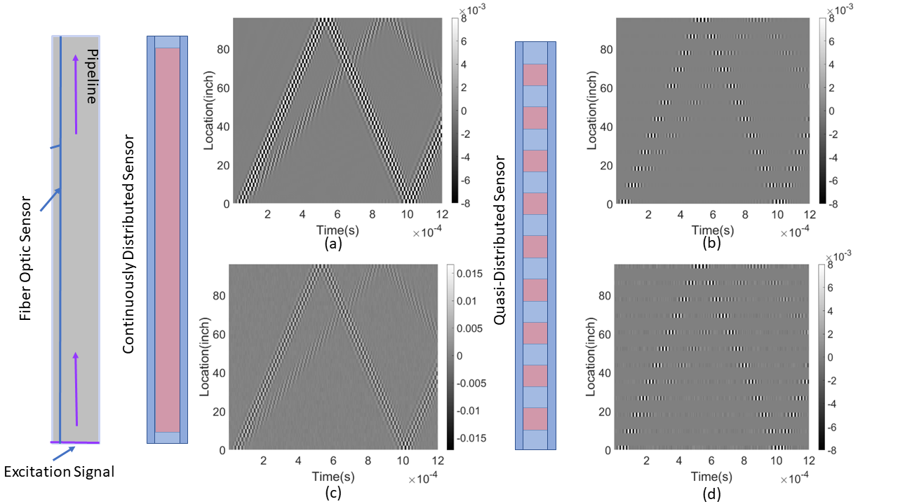

Quasi-Distributed Fiber Sensor-Based Approach for Pipeline Health Monitoring: Generating and Analyzing Physics-Based Simulation Datasets for Classification
Sensors, 2023
A framework for pipeline damage detection that converts simulated ultrasonic guided-wave data into distributed and quasi-distributed acoustic sensing responses, producing robust datasets for classifying pipeline events under varying noise conditions.